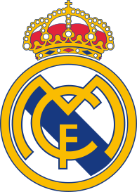

Real Madrid
Le Real Madrid Club de Fútbol, plus connu sous le nom de Real Madrid ou simplement Real, est un club professionnel espagnol de football, basé à Madrid. Vainqueur de très nombreux titres nationaux et internationaux, il a reçu de la Fédération internationale de football association (FIFA) le titre honorifique de plus grand club du xxe siècle.

Sommaire
- Histoire
- Titres et trophées
- Culture populaire
- Nombre de titres
1-Histoire
En 1897, un groupe de jeunes de l'Institución Libre de Enseñanza, issus majoritairement des universités d'Oxford et de Cambridge, fonde le premier club exclusif de football de Madrid, le (Societè) Sky Football. Trois ans plus tard, des divergences dans le club ont donné lieu à une défection d'où le club est né et a adopté le nom de Madrid Foot-Ball Club en 1901. Ensuite le Sky Football se rebaptisé New Foot-Ball Club.
Le Madrid Football Club en 1905-1906.
La création est officialisée le 6 mars 19024,5. Lors de la première réunion, Juan Padrós est élu président et le club adopte une tenue blanche. La même année, Carlos Padrós, frère du président du Madrid FC et lui-même futur président du club, parvient à organiser à l'occasion du couronnement d'Alphonse XIII le premier tournoi national, appelé Concours Madrid de Foot-Ball Association. Devant son succès populaire, le roi accepte de prolonger le principe du tournoi, rebaptisé Copa del Rey (appelée en français « Coupe du Roi », ou « Coupe d'Espagne »).
Derby madrilène en 1920.
Finale de la Coupe du Roi 1924.
En 1903, le club fonde avec d'autres la Federación Madrileña de Foot-Ball chargé d'organiser tous les ans un Campeonato de Madrid (es) (en français : « Championnat de Madrid »), dont le vainqueur est qualifié pour la Copa del Rey5. Après le départ de plusieurs de ses joueurs à l'Atlético de Madrid, le Madrid FC absorbe le Moderno Football Club (es) (vainqueur du premier championnat régional en 1903), ce qui vaut d'être brièvement rebaptisé Madrid Moderno FC. L'équipe connaît une période de grand succès entre 1905 et 1908 en remportant toutes les éditions du Championnat de Madrid et de la Coupe du Roi, où elle bat en finale l'Athletic Bilbao (ou Club Vizcaya), par trois fois, puis le Vigo Sporting5.
Les dirigeants du club, devenu incontournable, participent logiquement à la création de la première fédération espagnole de football en 1909. Sur le terrain l'équipe connaît encore le succès en remportant le championnat de Madrid en 1910, 1913, 1916, 1917, 1918 et 19205, et la Coupe du Roi en 1917, face aux Basques de l'Arenas Club.
L'onction royale du 29 juin 1920 d'Alphonse XIII.
Le 29 juin 1920, par un décret d'Alphonse XIII, devenu grand amateur de football, le club reçoit le titre de « Real » (royal), comme l'avait obtenu à partir de 1908 plusieurs clubs de football, dont la Real Sociedad de Fútbol de San Sebastián, le Real Club Deportivo Español de Barcelona, le Real Vigo Sporting Club ou le Real Betis Foot-ball Club de Séville6. De ce fait, il acquiert son nom actuel : Real Madrid Club de Fútbol5,7. Cependant ce changement de nom ne lui apporte pas le succès espéré, si ce n'est en championnat régional. Le Real Madrid atteint la finale de la Coupe du Roi en 1924 mais s'incline face au Real Unión de Irun (0-1).
2-Titres et trophées
Historiquement, le Real Madrid CF est le club le plus reconnu sur la scène mondiale, ayant remporté 26 compétitions internationales, ce qui en fait le club le plus victorieux sur la scène européenne81 mais aussi le premier sur la scène internationale en ce qui concerne les compétitions officiellement reconnues par l'UEFA et la FIFA. En remportant le Championnat d'Espagne en Juillet 2020, le Real Madrid est devenu le club le plus titré de l'histoire du football avec un 92e titre gagné, un record absolu. En 2020, le Real Madrid détient notamment le record du nombre de titres en Liga (34 titres), en Ligue des champions (13 titres) et en Coupe du monde des clubs (4 titres).
En décembre 2000, le club est élu meilleur club de football du xxe siècle par la FIFA. Il a aussi reçu l'ordre du mérite de la FIFA en 2004. Le Real Madrid est autorisé à porter l'écusson des vainqueurs multiples (Multiple-winner badge) sur son maillot pour les matchs de Ligue des champions, l'ayant remportée à plus de cinq reprises. Le club détient également à ce titre et de façon permanente le véritable trophée de la Coupe des clubs champions82.
3-Culture populaire
Réseaux sociaux
Le 1er avril 2017, le Real Madrid devient le premier club sportif à dépasser les 100 millions de fans sur sa page Facebook officielle109. En 2021, le club réitère ce même record sur Instagram.
Supporters et rivalités
Pour la plupart des matchs à domicile, la majorité des sièges du stade est occupée par des abonnés, qui sont au nombre de 68 670 en moyenne. Le Real Madrid possède la meilleure affluence moyenne de tous les temps dans le football espagnol et attire régulièrement plusieurs dizaines de milliers de fans à Santiago Bernabéu. Ainsi, pour la saison 2008-2009, le club possédait la deuxième meilleure affluence moyenne en Europe avec environ 76 317 spectateurs par match de championnat.
Le club possède de nombreux fans et entretient des rivalités de longue date avec certains clubs, notamment le FC Barcelone (les deux clubs s'affrontant lors des fameux El Clásico). Le club possède aussi des rivalités avec l'Atletico Madrid et Getafe.
El Clásico
La rivalité avec le FC Barcelone traduit selon certains les rivalités politiques entre Castillans et Catalans. Depuis les débuts du football en Espagne, le Real Madrid et le FC Barcelone ont respectivement été considérés comme le représentant de l'État Espagnol et de la Catalogne, d'autant plus que les deux villes ont culturellement évolué dans des directions différentes110.
Durant les années 1950, la rivalité s'intensifia quand les deux clubs se disputèrent la signature de l'Argentin Alfredo Di Stéfano qui finalement intégra l'effectif du Real Madrid et participa aux nombreux succès du club lors de la décennie qui suivit. Les années 1960 virent la rivalité s'étendre au niveau européen lorsque les clubs se rencontrèrent deux années de suite en Coupe d'Europe, le Real Madrid s'imposant en 1960 et le FC Barcelone en 1961. En 2000, la rivalité fut renforcée à la suite de la décision controversée de Luís Figo de quitter les Catalans pour rejoindre le club madrilène. Les deux équipes se rencontrèrent à nouveau en Coupe d'Europe lors de la Ligue des champions 2001-2002 où le Real Madrid, futur vainqueur, remporta un duel qui fut qualifié par les médias espagnols de « match du siècle ».
Étant les deux clubs les plus couronnés de succès en Espagne, la rivalité se renouvelle chaque année, chaque équipe luttant afin de remporter le championnat, avec, depuis quelques années aussi, l'Atlético Madrid.
4-Nombre de titres
-
Plus grand nombre de titres en Championnat d'Espagne : 34 (record espagnol)
-
Plus grand nombre de titres en Ligue des champions : 13 (record absolu)
-
Plus grand nombre de titres en Coupe intercontinentale : 3 (codétenu avec l'AC Milan, Boca Juniors, Nacional et Peñarol) (record absolu partagé)
- Plus grand nombre de titres en Coupe du monde des clubs de la FIFA : 4 (record absolu)
- Plus grand nombre de titres en Coupe Latine : 2 (codétenu avec le FC Barcelone et l'AC Milan) (record absolu partagé)* Plus grand nombre de titres consécutifs en Ligue des champions : 5 (1956-1960) (record absolu)
- Plus grand nombre de titres consécutifs en Championnat d'Espagne : 5 (1961-1965 et 1986-1990) (record absolu)
- Plus grand nombre de titres consécutifs en Coupe d'Espagne : 4 (1905-1908), codétenu avec l'Athletic Bilbao et le FC Barcelone (record espagnol partagé)
- Plus grand nombre de titres consécutifs en Coupe du monde des clubs de la FIFA : 3 (2016-2018) (record absolu)